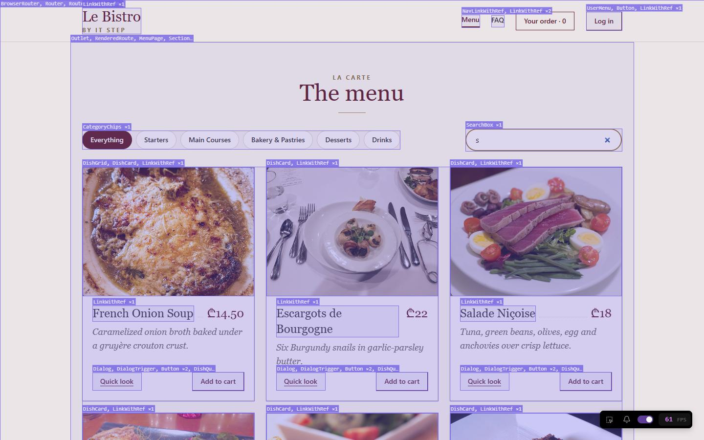
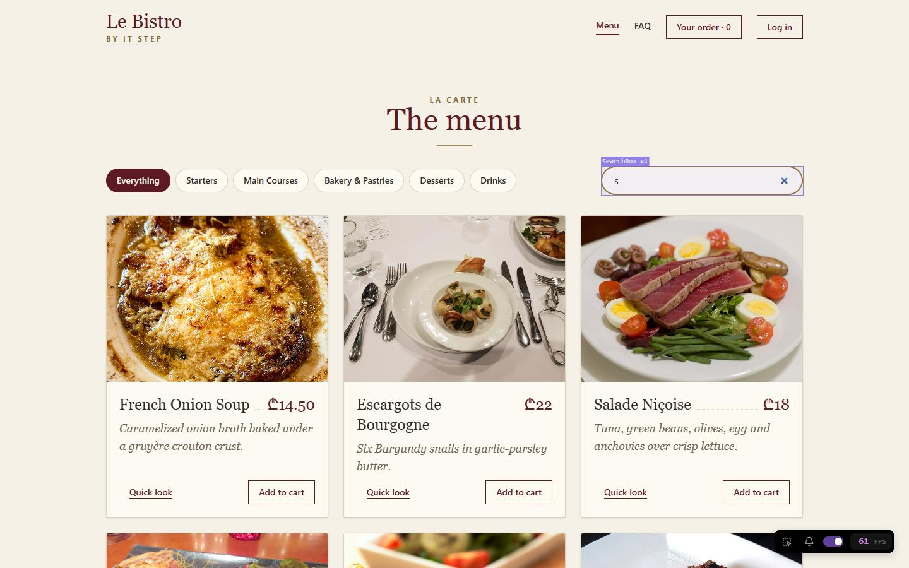

Le coup de feu is the rush: every ticket arrives at once. Today the kitchen gets busy, and Le Bistro has to keep its head: a page that stays quick, and a page that does not fall over.
Theme
Renders, bundles, long lists
Le Bistro today
803 orders on the pass
Your project
v1.2 · measured and faster
Length
2 hours · one break
LB-38 · SessionL37 → L38
Letters lost in the search box · phone-class CPU
6→0of 17
JavaScript before the first page shows
196→160kB gzip
Kitchen with 803 orders · main thread blocked
425→82ms
One dish with no price
A white page → one grey card
Le Bistro · L38 · the service · 120 minutes
Today's menu
AccueilHello where Le Bistro is today3′
ApéritifQuestions and two homework demos8′
EntréeProblem 1 the search box that eats letters5′
PlatWhy a page renders, and how to see it Profiler, React Scan, the compiler, memo24′
AtelierClasswork 1 measure your own shop15′
Pause caféBreak a pit stop: music on, screens off10′
Second platProblem 2, Friday night bundles, boundaries, long lists27′
AtelierClasswork 2 with AI prompt it, then measure it15′
MasterclassOne prompt, the whole Le Bistro CRAFT, then the short version8′
DessertWrap-up recap, homework v1.2, what comes next5′
Route Twelve lectures, one restaurant
Le Bistro, lecture by lecture
v0.1L27Mise en placecomponents and props
v0.2L28À la minutestate and events
v0.3L29Le marchéeffects and the real menu
v0.4L30La maisonroutes, login, guards
v0.5L31Le passecontext and a reducer
v0.6L32Le garde-mangerstores, outside React
v0.7L33Le bon de commandeforms with a schema
v0.8L34La chambre froidea cache for the API
v0.9L35Le serveurorders and optimistic buttons
v1.0L36Le couverta table for every guest
v1.1L37Le goûteurtests and a robot reviewer
v1.2L38Le coup de feufast and strongHEAD → today
What comes next
L39Security Day I. What an attacker can do to a site that has no server of its own.
L40 · L41A real project: the admin dashboard of Le Bistro, in two sprints. A table of 194 products is where today's tools earn their keep.
The tests from last time are the net: every change today is one they can catch.
Today's goal Press next to unveil it
A busy night changes nothing you can feel
Letters typed fast all arrive
The first page needs less code
One bad dish does not blank the menu
800 orders scroll smoothly
$npm run build && npm run sizefirst-load JavaScript, gzip
L37 196.1 kBone file, 628 kB before gzip
L38 160.3 kBbudget 170 kB: oksearch box · phone-class CPU · "french onion soup"
L37 "fe ion soup"6 of 17 letters lost
L38 "french onion soup"kitchen · 803 orders · main thread blocked
naive list 425 ms6,484 elements in the page
what we ship 82 ms172 elementsthe dish with no price
L37 white page L38 one grey card
Apéritif Before we start
Questions from last time?
Tests, fake kitchens, coverage, the robot.
01
Why did getByRole("button", { name: "Add" }) find two buttons, in the second test only?
Nothing emptied the page between the tests. With Vitest's globals off, cleanup() is not automatic: it goes in afterEach in setup.ts. Today the same idea comes back: whatever one measurement leaves behind spoils the next one.
02
Coverage said 100%, and a test still passed with the disabled line deleted. How?
Coverage says a line ran, never that a test checked it. That is why we broke the code on purpose. Today you will see a number that looks just as sure of itself, and is just as easy to misread: milliseconds.
03
Why npm ci in the robot, and not npm install?
npm ci installs exactly what package-lock.json says and fails if it does not match. Same versions on your laptop and on the robot, so a red check means the code, not the install. Today the robot gets a new job: it will fail a pull request that makes the site too heavy.
Homework check Two volunteers, two minutes each
Show us your v1.1
Open your shop, run npm test, and show the table of three things you broke on purpose. Which test caught each one? Did any stay green?
Look for
npm test is green, six tests or more
A break-it table with three honest rows
Found by role, label or text: no test ids
For Pro: a red check and a green check on pull requests
The live Vercel link works
Entrée · Problem 1 Before the new tool
The search box that eats letters.
A guest on a phone types french onion soup into the menu. The page shows fe ion soup. Nothing crashed, nothing is in the log, and every test from last time is green. Who would have noticed?
typed on the phonefrench onion soupwhat the box held: the letters in red are gonefrenchonionsoupfe ion soup6 of 17 letters lostChrome, CPU 6× slower, a key every 120 ms,
the Le Bistro build of last time
Problem 1 A small copy of the real thing, with real React. Press the button, or type fast yourself
Where does the text live?
Problem 1 The same test, on the real app. Press next to see the fixed one
What the box held after "french onion soup"
CPUA key everyLe Bistro L37Le Bistro L38
Why: React Router 8 wraps every address change in startTransition. In L30 we made the search box controlled by the address. A controlled input needs an urgent update; a transition is the opposite. Under load, the box shows the old text, and the next letter lands on it.
Problem 1 So what would we need?
Three things
See what React doeswhen I press a key: which components render, and for how long.
Measure, not guessa number before and a number after, on a slow machine, not on yours.
Know what is urgentthe letter in the box now; the list, the address, the cards a moment later.
Solution 1 First, what React actually does when you press a key
Trigger, render, commit, paint
1Trigger
A state changed, here or in a parent. Or a context changed. Or a parent rendered.
2Render
React calls your function and gets JSX. It does this for the component, and for every child it re-creates.
3Commit
React compares with last time and changes only the DOM that differs.
4Paint
The browser draws a new frame: every 16.7 ms at 60 per second.
One key in the menu search · the real Le Bistro L37 · CPU 4× slower
016.733.350 ms
render 46.2 ms
Three frames pass before the letter can be drawn. A frame that takes longer than 16.7 ms is a frame the guest feels.
Solution 1 Real React, one page, five versions. Press a version, then type or press the button
Why did it render?
Solution 1 Real renders of the real menu page. Press next to add a column
Component renders, counted
Draw the menu25 cards
Type “soup”4 keys
Click “Desserts”6 cards
Add to cart1 dish
L37
548
2,110
645
17
L37 + compiler
547
295
149
11
L38, no compiler
576
53
1,208
17
L38
577
48
159
11
A surprise: L38 without the compiler is worse than L37 when you click a category (1,208, not 645). We gave every dish card its own error boundary, and a boundary is two more components per card. With the compiler the extra cost disappears. The count can go up when you add safety: measure again after every change.
Solution 1 One key press, as the React Profiler would show it. Real capture, CPU 4× slower
Where did the 46 ms go?
Hover a bar.
Solution 1 Both are free, both take two minutes to start
React Scan and the Profiler

L37. One key: every card, link and dialog flashes.

L38. One key: only the search box.
React Scan
Outlines every component that renders, and counts. No code changes.
npx react-scan@latest http://localhost:5173
or a script tag in index.html while you develop: unpkg.com/react-scan/dist/auto.global.js, before your own scripts
The React DevTools Profiler
Record, press a key, stop. A flame graph for each commit, and "Why did this render?" for each component (enable it in the settings).
Chrome extension “React Developer Tools”, tab Profiler. It needs a development or a profiling build: on a plain production build it says “Profiling not supported”. In development React is slower and renders twice on purpose (StrictMode), so compare before and after on the same setup.
Solution 1 · Recipe Type it with me, step by step
The text lives next to the box
The problem in two linesEvery key changes the address: a router update, which React Router 8 runs as a transition. The box waits for it.
Keep the text next to the boxA normal state: the letter is in the box at once. The page does not render on a key.
Tell the page after a pauseuseDebounce is from L29. An Effect Event (React 19.2) calls the latest onChange without re-running the effect.
Follow the address when it changes without youThe Back button, a link: adjust state while rendering when the prop changed. No effect.
The rule
State lives where it changes fastest. What must answer at once stays in the component; what is shared, or slow, goes to the address.
Solution 1 Real compiler, real output. Pick an example
What the compiler writes for you
You write
The compiler gives
Solution 1 · Recipe Four lines, and then check what it did
The compiler in a Vite 8 project
Install itVite 8 builds with Rolldown, so the compiler runs through its Babel plugin. Compiler 1.0.0, plugin 0.2.4: four packages.
One plugin linereactCompilerPreset() comes with @vitejs/plugin-react 6. Vitest reads the same file: tests run the compiled code.
See what it didLe Bistro: 102 compiled, 2 left alone, with the reason. Cost: +27 kB of JavaScript (+4%); build 1.1 → 2.4 s.
Opt out, or opt in"use no memo" as the first line keeps a component as written. Careful teams start with compilationMode: "annotation".
Solution 1 The kitchen board with 803 tickets. One ticket changes. How many rows render? Guess, then click
When do you still write memo?
memo on the rowReact CompilerThe function you pass to the rowRows that render
nonoa new one at every render
1,606 803 for the change, 803 for the refresh
noyesfrom the mutation object setStatus.mutate(…)
2,409 worse: the object changes three times
noyesthe stable const { mutate }
1,606 the compiler cannot skip a row made inside .map()
yesnoa new one at every render
1,606 memo sees a new prop, and renders anyway
yesnouseCallback, written by hand
1 only the ticket that changed
yesyesthe stable const { mutate }
1 the compiler wrote the useCallback; the memo is yours
Solution 1 Everything else: let the compiler do it, or do nothing
Where you still decide
1
A list row
Rows made inside .map(). memo on the row, and a function that stays the same. 1,606 → 1
2
A value a library compares
An effect's dependency, a table's columns, a chart's options: they must keep their identity. useMemo says so out loud.
3
Code the compiler skips
A try/catch with a condition, a library whose functions are not safe to remember. The linter tells you which: OrderList here.
4
A calculation that is really slow
Remembering a result is not making it fast. Measure it first; sometimes the fix is a better algorithm, or doing it on the server.
Never:useMemo and useCallback everywhere, "just in case". It costs memory, it hides the code, and without a measurement you do not know that it helped.
Solution 1 The four mistakes of the first half
When the fix does not fix
memo, with a new function every time
<MemoCard name={n} onAdd={() => add()} />
Version 2 of the lab: 48 cards render for 4 keys, exactly as without memo. memo compares props, and a new function is never equal to the last one.
A function that stays the same: useCallback, or the compiler. And measure
State too high
const [text, setText] = useState("") // in the page
Every key renders the page and its 25 cards: 2,110 renders for four letters, and 46 ms at 4× CPU. Here it also lost letters.
Move it down, into the one component that needs it: 53 renders
Timing in development
npm run dev → "the page takes 90 ms"
In development React renders every component twice (StrictMode) and runs extra checks. The number is not the guest's number. And your laptop is not their phone.
Compare before and after on the same setup. For honest milliseconds: a profiling build (react-dom/profiling), CPU slowed 4×
Counting renders inside the component
const renders = useRef(0); renders.current += 1;
The compiler refuses: Cannot access refs during render (and the linter says the same). The count would also change when React renders twice on purpose.
Count from outside: the Profiler, React Scan, or the DevTools hook (as in today's lab)
Quick check Vote, then click
Which change takes the most renders out of typing in the menu search?
B. The text stops changing the address on every key, so the page and its cards do not render: 2,110 renders become 53. A helps a lot (turning the compiler on did the same for the cards: 2,110 became 295), but the router's links still render on every key, because the address still changes. C remembers an array the cards do not read from. D only changes development: StrictMode does nothing in the production build.
Atelier · Classwork 1 15 minutes, on your own project
Measure your shop
Baseeveryone
See it, then write a number
Build and preview your shop (npm run build, npm run preview). Open it with React Scan, type three letters in the search, click a category, add a product.
Fill three rows of a table in the README: the action, how many components rendered, and which one rendered most.
Plusmost of you
Change one thing, measure again
Record one key press with the React DevTools Profiler (npm run dev). Find the widest bar. Move the state down, or give the list a stable function and memo. Record again.
Add the "after" column to the table. npm test stays green.
Profast finishers
The compiler and a budget
Turn the React Compiler on (four packages, one line). Copy scripts/compiler-report.mjs: which components does it leave alone, and why? What did your bundle gain?
Copy scripts/check-size.mjs, set a budget from your own number, and add the step to ci.yml.
Done when
A table with at least two rows: before → after, with numbers
You measured a preview or a profile, not a guess
You can say which bar was widest, and why
npm test and npm run build pass
Stuck? The workflow
npm run build
npm run preview # http://localhost:4173
npx react-scan@latest http://localhost:4173
# Profiler: npm run dev, DevTools tab "Profiler"
# ⚙ → "Record why each component rendered"
# ● record, type ONE letter, ■ stop
# the widest bar is where to look first
Pit stop 10 minutes
Pit stop
Stand up, refill, rest your eyes. After the break: Friday night. Three things go wrong at once, and one of them turns the whole page white.
10:00
pit stop · tyres off, screens off
Second plat · Problem 2 The coup de feu
Friday night.
Three things go wrong at once. The first page is slow to appear. One dish with a missing price turns the whole site white. And the kitchen screen, with 803 tickets, stops answering.
ALARM 1 · the weight
JavaScript before the first dish
628 kB196 kB gzip · one filethe pages nobody opened are insideALARM 2 · a white page
the API sends dish 3 with price: nullTypeError: Cannot read properties of
null (reading 'toFixed')React removes the whole pageALARM 3 · the pass
803 orders, one component each
6,484 elements · main thread blocked 425 ms
Problem 2 One cold load of real pages, measured on 2026-10-22. Pick what to compare
Real pages, side by side
Click a row.
Problem 2 So what would we need?
Three things
Send less at firstonly what the first page needs now; the other pages, when somebody asks for them.
Fail smalla dish with bad data costs one card, not the whole page. A tab from before the deploy does not break.
Draw only what is seen800 tickets, or a hundred thousand rows: the page should not pay for rows nobody looks at.
Solution 2 The real bundle of Le Bistro, drawn to scale. Pick a build, hover a block
Who is in the first file?
Hover a block.
Solution 2 Why is Zod in the first file? Press next: follow the imports
One import away
src/main.tsxstarts the app
src/App.tsxthe routes
layouts/SiteLayout.tsxevery page
components/Header.tsx
components/CartSheet.tsxthe cart drawer
components/CartContents.tsx
queries/orders.tssends an order
schemas/tableNotes.tsa form schema
node_modules/zod83.4 kB · 15% of the file
Result: the first file goes from 549.5 to 464.5 kB. Zod and react-hook-form leave for a schemas file of 131 kB that only the form pages download. The function never needed Zod, only the type of its argument.
Solution 2 · Recipe A file for every page that is not the first one
lazy() and Suspense
Decide what travels firstHome and the menu are where most guests start: they stay in the main file. Every other page becomes a file of its own.
lazy() and import()The page is loaded the first time somebody goes there. Our pages export a name, so .then says which one is the default.
A Suspense where the page goesWhile the file arrives, React shows the skeleton. One Suspense around the Outlet serves every page.
Read the buildOne file per page, and the main file is smaller. Nothing else changed: the routes are the same.
Solution 2 One real load of the menu on a slow phone: slow 4G, CPU 4× slower. Pick a build
What arrives, and when
Look at the gap between the end of the big script and the first question to the API: the page is running its code, slowed 4 times. The dishes cannot be asked for until it has run.
Solution 2 The same one-line fix, deployed twice. Press the button: which files must a returning guest fetch again?
A file for React, a file for us
One main file
React in its own file
File names carry a hash of their content: the same name means "you already have it".
Solution 2 The real photos of the menu, measured on 2026-10-22
Photos weigh more than the code
The rule
Above the fold: not lazy, and the biggest one gets fetchPriority="high". Below the fold:loading="lazy". And give the box its shape (width and height, or an aspect ratio) so that nothing jumps.
Solution 2 Four real pull requests. Click one: the robot builds it and reads the budget
Teach the robot to count kilobytes
No pull request chosenMerge
budget 170 kB
$ npm run build && npm run sizeClick a pull request on the left.
Solution 2 Real React. Press the red button, then move the boundary
Where does the damage stop?
Solution 2 · Recipe Close to the problem first, then wider
A card, a page, the whole app
Install a ready-made boundaryreact-error-boundary wraps the class component React needs, and gives you fallback and resetKeys.
Around each cardOne dish with bad data is one grey card. resetKeys: new data from the API gives it another try.
Around the pageHeader and footer stay. Another address clears the error. onError is where a log or Sentry goes.
Around everythingThe last net, for the code that is outside the pages. It looks the plainest, because it must not fail.
Solution 2 A boundary catches errors while React renders. Six cases: say caught or not, then read why
Does a boundary catch it?
Solution 2 The tab of a guest who arrived before your deploy. Do the three steps, in order
The file that is not there any more
The server
bistro.example/menu v1
Le Bistro MenuFAQCart
Press step 1.
network
Why only once
If the reload does not cure it, something else is wrong. A guard of ten seconds stops a reload loop, and the boundary tells the guest the truth.
Solution 2 Real React. A list that is slow to render, and a box that must answer at once
Urgent, and can wait
Solution 2 · Recipe Three tools for the same wish: the control must never lag behind my fingers
A transition, a late copy, a row that sits out
An update you start: a transitionThe tab is state you set. startTransition marks the change as not urgent: the tab answers at once, the list follows.
A value you receive: a late copyThe box shows text; the list reads lateText. Pair it with memo, as the lab showed.
A row that can sit outmemo on the row, and a function that never changes: const { mutate }, not the whole mutation object.
Solution 2 Real React, real browser. Press "Draw", then scroll to the end. The freeze is the lesson
How many rows does the page need?
Solution 2 The real kitchen page with 803 orders, CPU 4× slower. Median of several runs. Pick what to compare
Which fix does the most?
Solution 2 Real pages, measured on 2026-10-22: how many elements does the page hold?
Long lists on real pages
Solution 2 Four mistakes, all of them well meant
When the safety makes it worse
One boundary, at the top
<ErrorBoundary><App /></ErrorBoundary>
One dish with a null price replaces the whole page with the apology. It "works": nothing is white, and nothing is usable.
Close to the problem first: each card, then the page, then the app
Lazy on the first screen
<img loading="lazy" …> on the hero picture
The browser holds the biggest image of the first screen back until it has laid the page out, and asks for it late. The same goes for a lazy() home page: one more round trip before anything shows.
Lazy below the fold. fetchPriority="high" for the one big picture. Home and menu stay in the main file
A deploy that deletes the old files
the guest's tab asks for FaqPage-c3d4.js
404, a lazy page that never opens, and an apology that cannot be cured with "Try again".
The vite:preloadError handler: reload once. Or keep the last deploy's files for a while
A budget that moves
const BUDGET_KB = 300; // to make the pull request green
A check that never fails tells you nothing, and the next pull request starts from a heavier site.
Raise it only with the reason in the same pull request. Better: lazy() the new thing
Quick check Vote, then click
The menu is slow on a phone. The Profiler shows only thin bars. Where do you look first?
B. Thin bars mean that rendering is cheap: the cost is somewhere else. Look at what arrives and when: how much JavaScript before the first screen, which request waits for which, how big the photos are. A and C make renders cheaper, which is not the problem. D is about a failure, not about speed. On Le Bistro the photos (3.97 MB) outweigh the code (160 kB) by 25 times.
Atelier · Classwork 2 · with AI 15 minutes, on your own project
Prompt it, then measure it
The taskthe AI changes, you measure
BaseA review of your shop with the three biggest costs, how to measure each, and one change applied. You write the before and after numbers.
PlusLazy pages with one skeleton, an error boundary around the page, and the size budget in ci.yml.
ProYour 194 products: lazy images, a hero with fetchPriority, and a list that draws only what is on screen. Elements in the page, before and after.
Your prompt, in five parts (CRAFT)
C
ContextYour shop and stack, with versions (Vite 8, React 19, compiler on). Paste vite.config.ts and the component of the product list.
R
Role"A performance reviewer who measures before changing anything."
A
ActionThe three costs, how to measure them, the smallest fix. Apply the first one.
F
Format"A table, then only the changed files, complete, with paths."
T
Target"No memo or useCallback without a measurement. Tests stay green. Say what to measure after."
Done when
You measured before you pasted
A number after: renders, kB or elements
npm test and npm run build pass
AI.md: your prompt, one claim you checked
A sample prompt · Tech store
CONTEXT
Shop "Volt". Vite 8 + React 19 + TypeScript, react-router 8,
Zustand cart, DummyJSON products (194), compiler on, Vitest.
ROLE
A performance reviewer who measures before changing anything.
ACTION
Find the three biggest costs on a phone. For each: how I
measure it, the smallest fix, the risk. Apply only the first.
FORMAT
A table (cost · measure · fix · risk), then only the changed
files, complete, with paths.
TARGET
No memo or useCallback without a measurement. Tests and build
pass. Tell me what to measure afterwards.
Masterclass · LAB-38 Press next: the prompt opens part by part
Fast and hard to break, in one prompt
Prompt · LAB-38 · Le Bistro after L38
C
Contextwhat exists and what we use
Le Bistro, a French restaurant site: Vite 8 + React 19 + TypeScript + Tailwind CSS 4, react-router 8
(import from "react-router"), Zustand 5, react-hook-form 7, zod 4, @tanstack/react-query 5, shadcn/ui (Radix,
sonner), tests with Vitest 5, Testing Library 16 and MSW 3. API at /api through a Vite proxy: dishes (main
courses take 3 seconds), categories, search (10 requests a minute), login, profile, cart, orders, and the staff
queue (GET /orders/queue). The photos are 25 JPEGs of 90 to 450 kB.
R
Rolewho answers
You are a senior React performance engineer who writes code for beginners to read, and who never changes
anything before it is measured.
A
Actionwhat to build, step by step
Take the site as it is after the tests lecture and make it fast and hard to break on a phone:
- The search box keeps its own text, reports it after a 400 ms pause, and follows the address when Back changes it.
- The React Compiler on (@rolldown/plugin-babel with reactCompilerPreset). React in its own chunk (codeSplitting.groups).
- Every page except home and menu with lazy() and one Suspense with a skeleton. toKitchenNotes moves out of the
schema file (a type-only import) so Zod stays out of the first file.
- Boundaries (react-error-boundary): around each dish card, around the page (resetKeys on the address, onError logs),
around the whole app. A vite:preloadError handler that reloads once.
- Images: loading="lazy" decoding="async" on the cards, fetchPriority="high" on the hero.
- A kitchen page for staff: tabs with useTransition, a text filter with useDeferredValue, a list that uses
@tanstack/react-virtual, OrderRow in memo with a stable onAdvance.
- scripts/check-size.mjs (first-load JavaScript, gzip, budget 170 kB), npm run size, and a CI step.
- Tests for the search box, the boundaries, the preload handler and the kitchen page.
F
Formatwhat the answer looks like
First a table: every change, why, and how to measure it. Then every file in full with its path.
T
Targetwho reads it, when it's done
Beginners will read it. No useMemo or useCallback unless a measurement shows it is needed. The pages are exported by
name, so lazy() uses .then((m) => ({ default: m.Page })). npm test, npm run build and npm run lint pass. At the end,
name three numbers to measure before and after: first-load kB, renders while typing, main-thread time with 800 orders.
Masterclass · LAB-38 The AI writes fast. You decide if it's right.
Run it, then check it
Copy the prompt into an AI toolClaude, ChatGPT, Copilot Chat: any of them. Nothing to attach
Build what it gives backa new Vite project with every file at its path, plus npm install react-error-boundary @tanstack/react-virtual and the compiler's four packages
Runnpm test, npm run build and npm run sizean error message goes straight back into the chat
Compare with code/after-L38the version we built by hand
Check it with what you learned today
The search text lives in the box, not in the page and not only in the address
Pages are lazy() with the .then that picks a named export, and oneSuspense around the outlet
Three levels of boundary, resetKeys on each, and onError tells somebody
No useMemo and useCallback sprinkled around; memo only on the row, with a stable function (const { mutate })
The list sits in a box with a fixed height; the hero is fetchPriority="high", the cards are lazy
Put a null price in the data: one grey card, not a white page
AIs love useMemo and invented numbers. Today you can ask for the measurement, and run it.
Masterclass · LAB-38 The same five parts, without the labels
The short version
Prompt · LAB-38 · the short version
You're a senior React performance engineer writing for beginners, and you never change anything before it is measured.Le Bistro is a Vite 8 + React 19 + TypeScript + Tailwind 4 app with react-router 8, Zustand 5, react-hook-form 7, zod 4, @tanstack/react-query 5, shadcn/ui and Vitest 5 tests; its API at /api has slow main courses, a rate-limited search and a staff queue of orders; its 25 photos weigh 90 to 450 kB.Make it fast and hard to break on a phone: a search box that keeps its own text and reports after a pause; the React Compiler and React in its own chunk; every page except home and menu behind lazy() and one Suspense skeleton, with toKitchenNotes moved out of the schema file so Zod stays out of the first file; error boundaries around each dish card, the page and the whole app, plus a vite:preloadError handler that reloads once; lazy photos and a high-priority hero; a staff kitchen page with a transition on the tabs, a deferred filter, a virtual list and a memo row with a stable function; a first-load size budget of 170 kB gzip checked in CI; and tests for the search box, the boundaries, the preload handler and the kitchen page.Answer with a table of every change, why, and how to measure it, then every file in full with its path.Keep it simple for beginners: no useMemo or useCallback unless a measurement shows the need; named page exports with lazy(() => import(...).then(...)); npm test, build and lint must pass; end with three numbers to measure before and after.
ContextRoleActionFormatTarget
How CRAFT works
The five parts are a checklist for your thinking, not a form to fill in. Once all five are there, the labels can go.
Dessert What we solved today
Two problems, two answers
Problem 1
A search box that loses letters, and a page that renders 2,110 components for four keys. Nobody noticed, and every test was green.
See it, count it, move the state
React Scan and the Profiler show what renders. The text lives next to the box. The React Compiler remembers what you would have written by hand, and memo stays on the list row.
Problem 2
Friday night: 628 kB before the first dish, one bad price turns the page white, and 803 tickets freeze the screen.
Send less, fail small, draw less
Lazy pages and a size budget the robot enforces. Boundaries around the card, the page and the app, and a reload for the old tab. A transition, a late copy and a list that draws only what is on screen.
Dessert Click a card to check yourself
What does this do?
01
01
The FAQ becomes a file of its own, downloaded the first time somebody goes there. The .then says which named export is the default.
02
02
While a lazy page's file arrives, React shows the skeleton. One Suspense around the outlet serves every page.
03
03
If a page crashes while it renders, show PageCrash instead, and keep the header. Another address clears the error.
04
04
An older copy of the text that is allowed to run late. The box shows text at once; the list reads lateText (and needs memo).
05
05
Marks the change as not urgent: the tab answers at once and the list follows. React may interrupt it if a key arrives.
06
06
A test for size. Over the budget, the step fails, the check turns red, and the merge button waits.
Homework Before the next lecture
Your shop, version 1.2
Numbers, not feelings
Baserequired
Measure, change, measure
A table in the README with at least two rows: an action, the number before, the number after (renders, milliseconds or kilobytes), and what you changed.
Every page except the first ones is lazy(), with one skeleton, and npm run build shows a file per page.
An error boundary around the page: a message, and the header stays.
Plusrecommended
Photos and a budget
Lazy photos below the fold, fetchPriority="high" on the biggest one, and a boundary around each product card with a test.
scripts/check-size.mjs with a budget from your own number, and the step in ci.yml.
Profast finishers
Draw less, survive a deploy
Your 194 products in a virtual list (or paged): elements in the page, before and after.
The vite:preloadError handler, with a test that it reloads once and not twice.
Before you submit
The before/after table is in the README
npm test and npm run build pass
You measured a preview or a profile, not a guess
The Vercel link works
Full brief and grading: homework.md.
Dessert The whole track, from the first component to the first stress test
Twelve lectures, one restaurant
L27 · v0.1Mise en placeComponents and props.
L28 · v0.2À la minuteState and events.
L29 · v0.3Le marchéEffects and hooks.
L30 · v0.4La maisonRoutes, login, guards.
L31 · v0.5Le passeContext and a reducer.
L32 · v0.6Le garde-mangerStores, outside React.
L33 · v0.7Le bon de commandeForms with a schema.
L34 · v0.8La chambre froideA cache for the API.
L35 · v0.9Le serveurChanges that answer first.
L36 · v1.0Le couvertA table for every guest.
L37 · v1.1Le goûteurA taster, and a robot.
L38 · v1.2Le coup de feuFast, and hard to break.
Your shop
It has the same twelve layers. From today it also has numbers: how many renders, how many kilobytes, how many elements.
L38 Le coup de feu
Merci!
Questions now, or in the class chat. Your table of numbers is the homework. Next time: what can someone do to a site that has no server of its own?
Next time · syllabus L41
Security Day: the attacker's view
A page that is fast and strong can still be robbed: from the code it sends to every guest, from a library it installed, from a token left in the browser. Next, four real breaches, what the browser hands to anyone who asks, secrets that were never secret, and an audit of your own shop. Bring your project.